第06讲 难点探究专题：几何图形中的动态问题
第06讲 难点探究专题：几何图形中的动态问题
(5类热点题型讲练)

目录
【考点一 利用分类讨论思想解决几何图形中旋转多解问题】 1
【考点二 几何图形中动角求定值问题】 4
【考点三 几何图形中动角探究数量关系问题】 10
【考点四 几何图形中动角求运动时间问题】 16
【考点五 几何图形中动角之新定义型问题】 23

【考点一 利用分类讨论思想解决几何图形中旋转多解问题】
例题：（24-25七年级上·全国·期末）如图①，点O在直线 上，过O作射线
上，过O作射线 ，三角板的顶点与点O重合，边
，三角板的顶点与点O重合，边
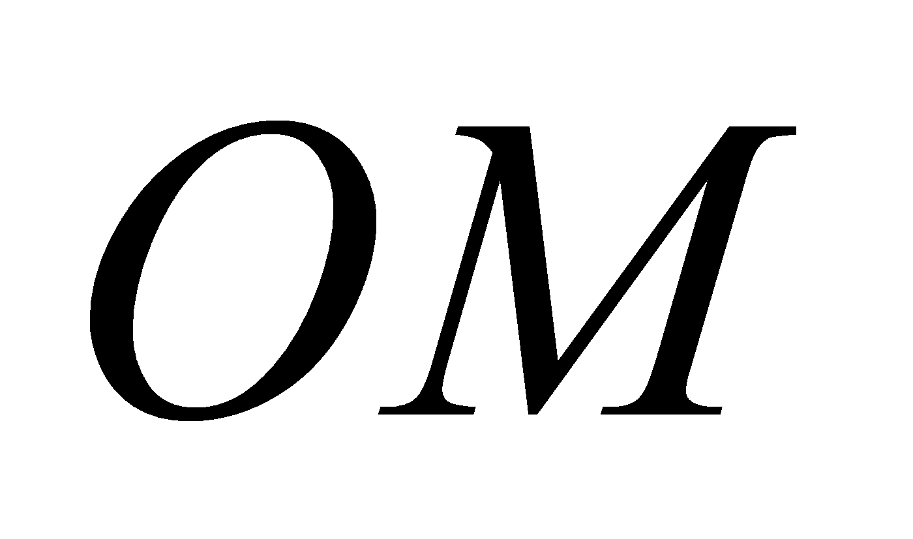
与 重合，边
重合，边 在直线的下方．若三角板绕点O按
在直线的下方．若三角板绕点O按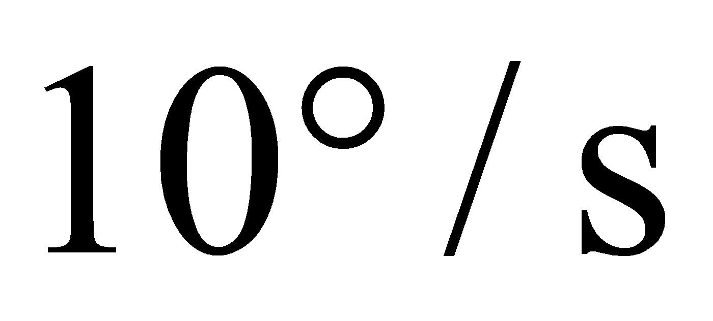
的速度沿逆时针方向旋转一周，在旋转的过程中，第 时，直线恰好平分锐角
时，直线恰好平分锐角 （图②）．
（图②）．
【答案】6或24/24或6
【知识点】几何图形中角度计算问题、角平分线的有关计算
【分析】本题考查了角平分线的定义，解题的关键是分两种情况进行讨论，分别依据直线恰好平分锐角，得到三角板旋转的度数，进而得到 的值．
的值．
【详解】解： ，
，
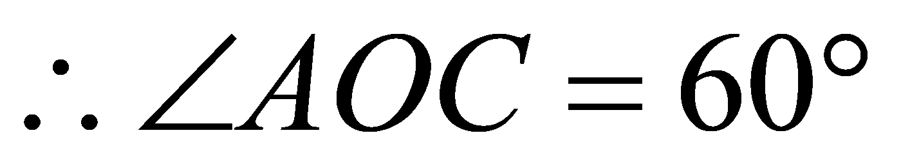
，当直线恰好平分锐角时，如图：

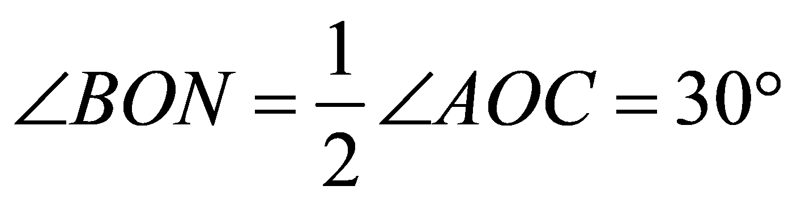
，此时，三角板旋转的角度为
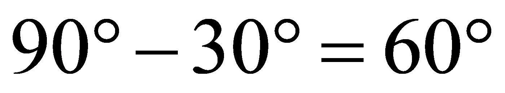
，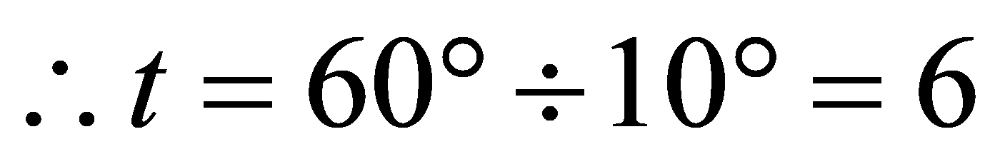
；当在的内部时，如图：

三角板旋转的角度为 ，
，
 ；
；
 的值为：6或24．
的值为：6或24．
故答案为：6或24．
【变式训练】
1．（23-24七年级下·广东广州·期末）在同一平面内，将两副直角三角板的两个直角顶点重合，并摆成如图所示的形状．已知 ，
， ，
， ，若保持三角板
，若保持三角板 不动，将三角板
不动，将三角板 绕点A在平面内旋转．当
绕点A在平面内旋转．当 时，
时， 的度数为 ．
的度数为 ．

【答案】 或
或
【知识点】三角板中角度计算问题、三角形内角和定理的应用
【分析】本题考查了三角板中角度计算问题及三角形内角和，根据题意画出图形，再根据角之间的关系结合三角形内角和即可得出答案．
【详解】解：当
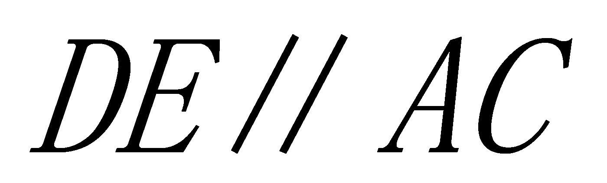
时，，分以下两种情况：如图1所示，
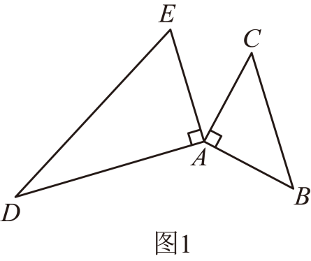
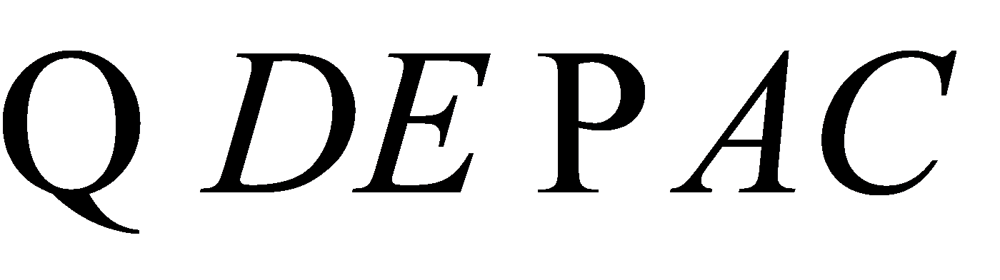
，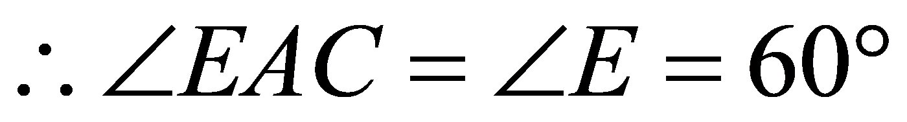
；如图2所示，
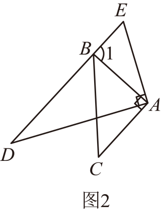
，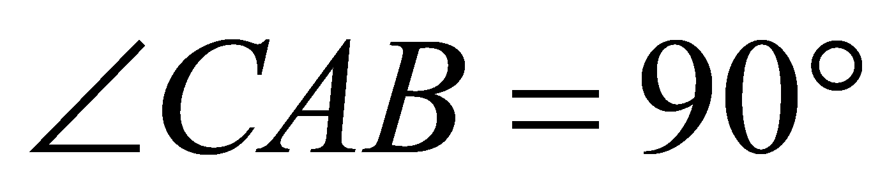
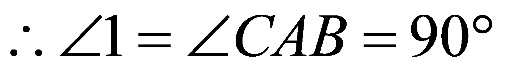
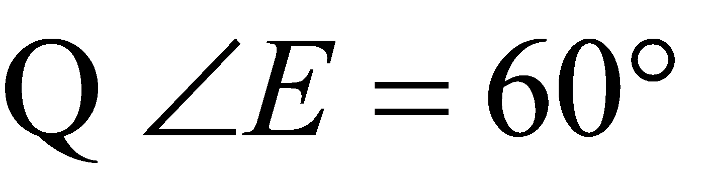
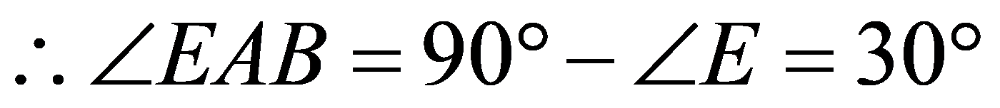
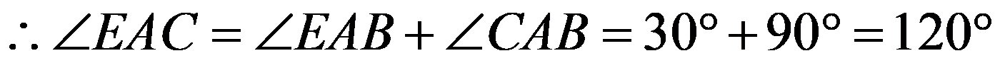
综上所述，的度数为或
根据答案为：或．
2．（23-24七年级下·天津和平·期中）在数学研究中，观察、猜想、实验验证、得出结论，是我们常用的几何探究方式．请你利用一副含有 角的直角三角板和含有
角的直角三角板和含有 角的直角三角板
角的直角三角板
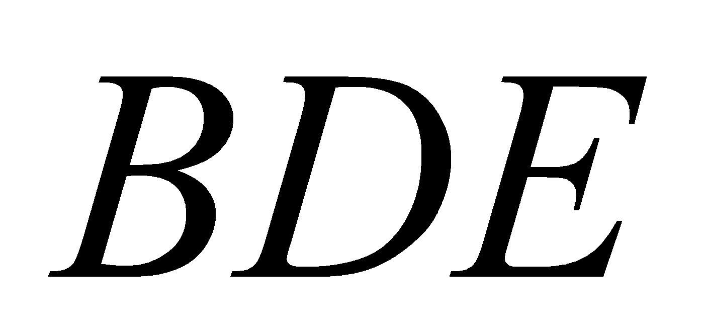
尝试完成探究．试探索；保持三角板不动，将角的顶点与三角板的角的顶点重合，然后摆动三角板，使得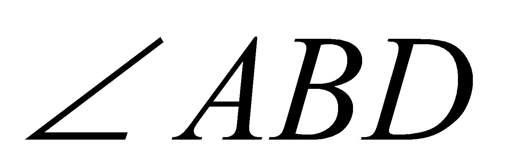
与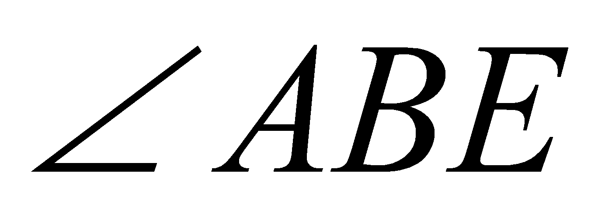
中其中一个角是另一个角的两倍，请写出所有满足题意的的度数 ．
【答案】 或
或 或或
或或
【知识点】几何图形中角度计算问题、三角板中角度计算问题
【分析】本题考查的是角的和差运算．分四种情况分别画出图形，再结合角的和差运算可得答案．
【详解】解：如图，
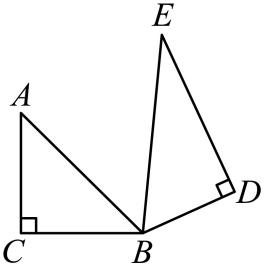
∵
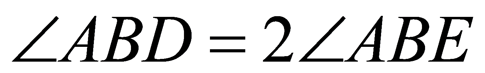
，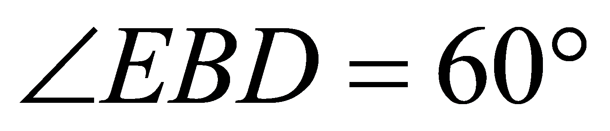
，∴
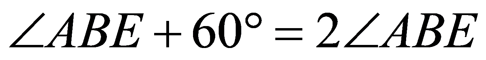
，∴
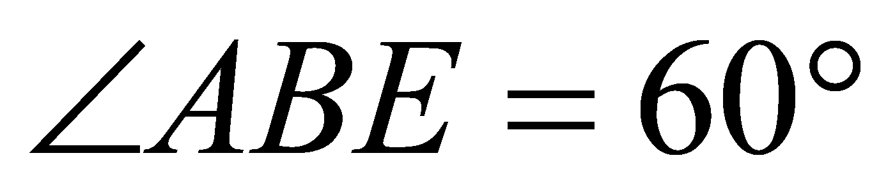
；如图，
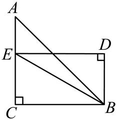
∵，，
∴
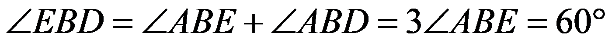
，∴
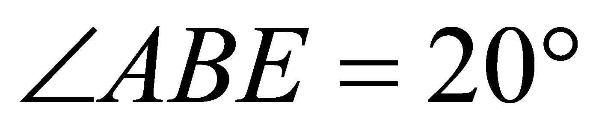
，如图，
∵
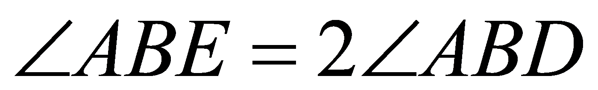
，，∴
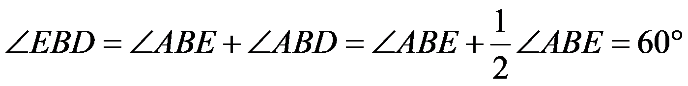
，∴
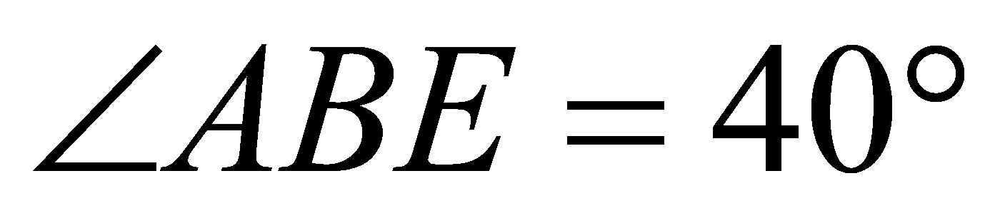
，如图，
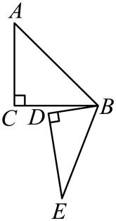
∵，，
∴
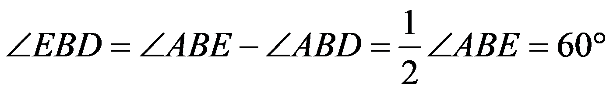
，∴
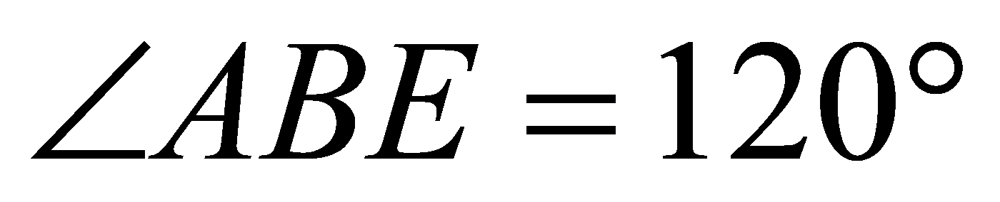
，综上：为或或或．
故答案为：或或或．
【考点二 几何图形中动角求定值问题】
例题：（23-24七年级下·辽宁鞍山·开学考试）在一次数学实践探究活动中，小明和他的同伴们将一个直角三角尺按如图所示方式放置，发现了其中的奥秘．

(1)如图①，三角尺 的直角顶点P在直线
的直角顶点P在直线 上，点A，B在直线的同侧．若
上，点A，B在直线的同侧．若 ，求
，求 度数．
度数．
(2)绕点P旋转三角尺，使点A，B在直线的同侧，如图②，若 平分
平分 ，
， 平分，他们发现
平分，他们发现 的度数为定值，请你求出这个定值．
的度数为定值，请你求出这个定值．
(3)绕点P旋转三角尺，使点A，B在直线的异侧，平分，平分，设 ，如图③，探究的度数．
，如图③，探究的度数．
【答案】(1)
(2)
(3)
【知识点】几何图形中角度计算问题、角平分线的有关计算
【分析】本题考查角的和差，角平分线的定义．
（1）根据
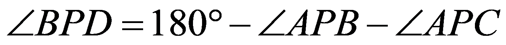
即可求解；（2）由 可得到
可得到
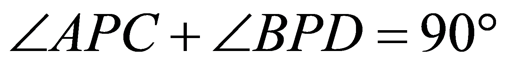
，根据角平分线的定义，可得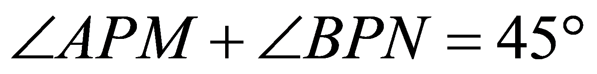
，进而根据角的和差即可求解；（3）由，求得
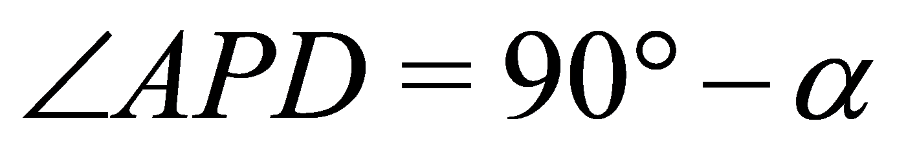
，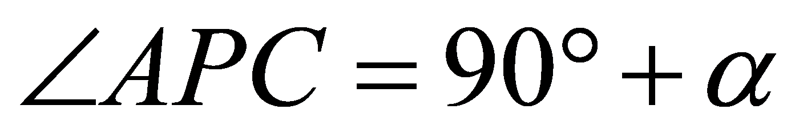
，根据角平分线的定义可得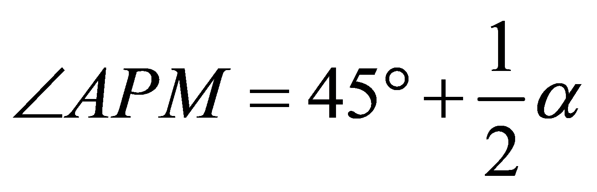
，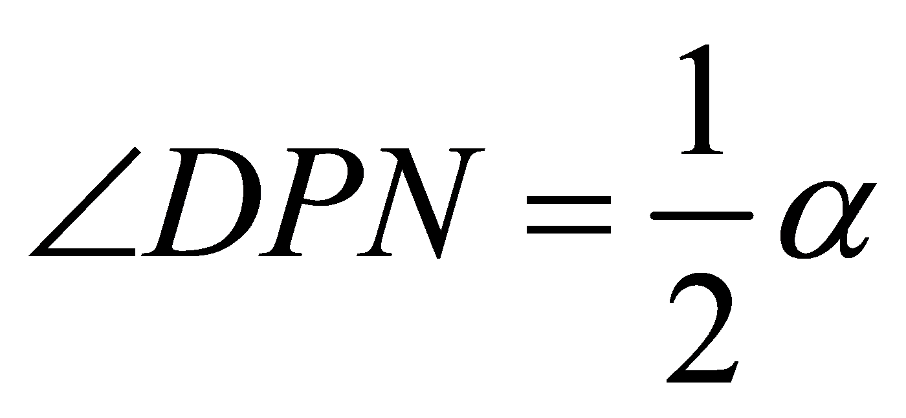
，最后根据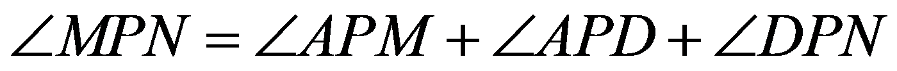
即可求解．【详解】（1）解：
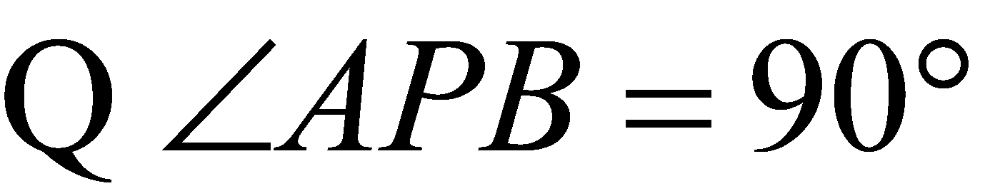
， 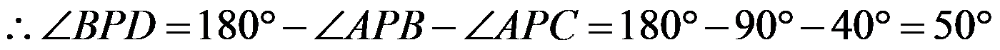
；（2）解：∵，
∴ ，
，
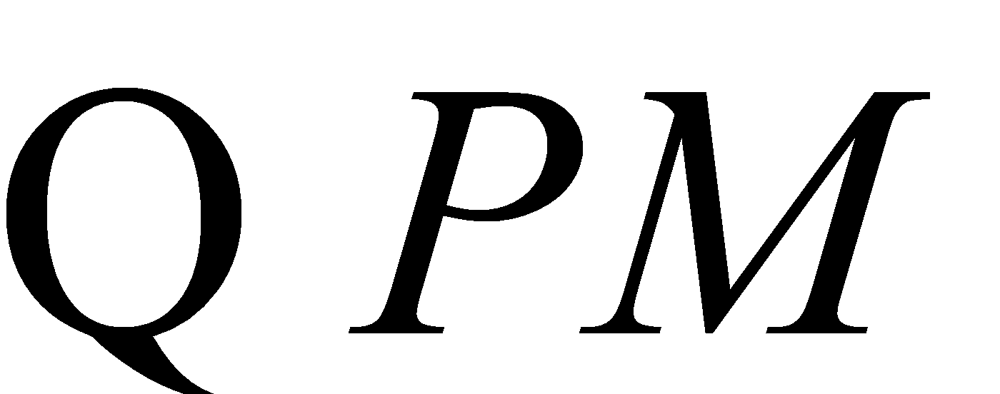
平分，平分，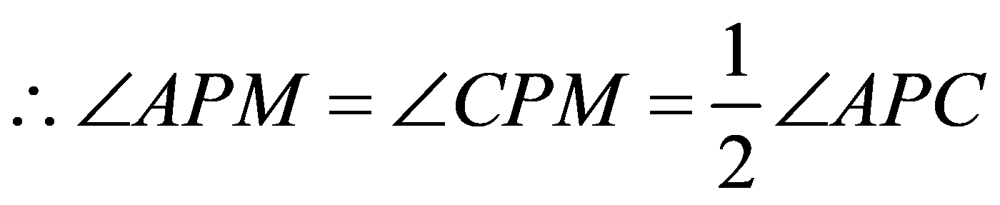
，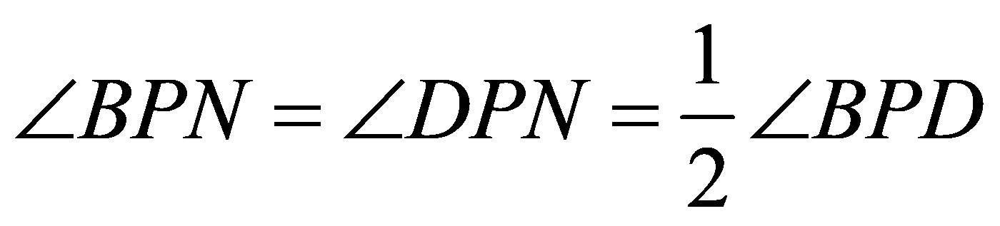
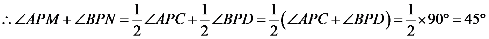
，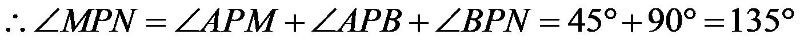
；（3）解：∵，，
∴
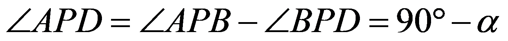
，∴
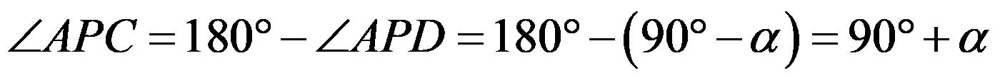
，∵平分，
∴，
∵平分，
∴，
．
【变式训练】
1．（23-24七年级上·江苏徐州·期末）已知 ，
， ．
． 平分
平分 ，
， 平分
平分 ．
．
(1)如图①，当 重合时，求的值；
重合时，求的值；
(2)当 从图①所示位置绕点O以每秒
从图①所示位置绕点O以每秒 的速度顺时针旋转t秒（）；在旋转过程中的值是否会因t的变化而变化，若不发生变化，请求出该定值；若发生变化，请说明理由．
的速度顺时针旋转t秒（）；在旋转过程中的值是否会因t的变化而变化，若不发生变化，请求出该定值；若发生变化，请说明理由．
【答案】(1) ；
；
(2)不变，是定值，见解析．
【知识点】几何图形中角度计算问题、角平分线的有关计算
【分析】本题考查了角度的计算以及角的平分线的定义，理解角度之间的和差关系是解题的关键．
∠AOE-∠BOF的值是定值，
（1）首先根据角平分线的定义求得，，然后求解即可；
（2）首先由题意可得，再根据角平分线的定义得出，，然后由角平分的定义解答即可．
【详解】（1）解：∵平分，平分，
∴，，
∴；
（2）解： 是定值．理由如下：
是定值．理由如下：
由题意：，
则，，
∵平分，平分，
∴，
，
．
∴的值是定值，定值为．
2．（23-24七年级下·陕西榆林·开学考试）【问题情境】已知， ，，平分，平分．
，，平分，平分．
【特例分析】（1）如图1，当 、
、 重合时，求的值；
重合时，求的值；
【深入探究】（2）如图2，当、不重合，在的下方时，设， 的值是否会因为x的变化而变化? 若不发生变化，请求出该定值；若发生变化，请说明理由；
【问题解决】（3）在（2）的条件下，当时，求 的度数.
的度数.

【答案】（1） ；（2）不会变化，定值为；（3）
；（2）不会变化，定值为；（3）
【知识点】几何图形中角度计算问题、角平分线的有关计算
【分析】本题考查了角度的计算以及角的平分线的性质，理解角度之间的和差关系是关键．
（1）首先根据角平分线的定义求得 和
和 的度数，然后根据求解；
的度数，然后根据求解；
（2）根据角平分线的定义得出：，
，然后代入求值即可；
（3）根据，，求出，根据角平分线的定义求出，，根据角度间的关系，求出结果即可．
【详解】解：（1）∵平分，平分，，，
∴，，
∴；
（2）的值是定值；理由如下：
∵，
∴，，
∵平分，平分，
∴，
，
∴．
∴的值是定值，定值为；
（3）∵，，
∴，
∵平分，
∴，
∴，
∴，
∵平分，
∴，
∴．
3．（23-24七年级上·广东汕头·期末）如图， ，
， 角的顶点
角的顶点 互相重合，将
互相重合，将 绕点旋转．
绕点旋转．

(1)当射线， 重合时，
重合时， ______，
______，
(2)在绕点旋转的过程中，若射线，与中的某一条射线是另两条射线所夹角的角平分线，则的度数为______；
(3)在绕点旋转的过程中，若射线始终在 的内部．
的内部．
①普于思考的小明发现，在旋转过程中，的值为定值，请你求出这个定值；
②作和的平分线 ，
， ，在旋转过程中
，在旋转过程中 的值是否发生变化？若不变，请求出这个定值，若变化，请求出变化的范围．
的值是否发生变化？若不变，请求出这个定值，若变化，请求出变化的范围．
【答案】(1)
(2) 或或
或或
(3)① ；②度数不发生变化，为定值
；②度数不发生变化，为定值 ，理由见解析
，理由见解析
【知识点】几何图形中角度计算问题、角平分线的有关计算
【分析】本题主要考查了几何图形中角度的计算，角平分线的定义：
（1）直接根据角之间的关系进行求解即可；
（2）分当是的角平分线时，当是的角平分线时，当是的角平分线时，三种情况讨论求解即可；
（3）① ，则
，则 ；②先由角平分线的定义得到
；②先由角平分线的定义得到 ，再由即可得到结论．
，再由即可得到结论．
【详解】（1）解：∵，，
∴当射线，重合时， ，
，
故答案为：；
（2）解：如图2-1所示，当是的角平分线时，则；
如图2-2所示，当是的角平分线时，则 ；
；
如图2-3所示，当是的角平分线时，则 ；
；
综上所述，的度数为或或；
（3）解：①如图所示，∵，，
∴，
∴；
②度数不发生变化，为定值，理由如下：
∵，，
∴，
∵，分别是和的平分线，
∴ ，
，
∴ ．
．
【考点三 几何图形中动角探究数量关系问题】
例题：（23-24七年级上·吉林·期末）已知 ，平分
，平分 ．
．
(1)如图，若 ，则的度数是______；（直接写出答案）
，则的度数是______；（直接写出答案）
(2)将（1）中的条件“”改为“是锐角”，猜想与的关系，并说明理由．
【答案】(1)
(2)，理由见解析
【知识点】几何图形中角度计算问题、角平分线的有关计算
【分析】本题主要考查了几何图形中角度的计算，角平分线的定义：
（1）先根据角之间的关系得到 ，再由角平分线的定义得到，则；
，再由角平分线的定义得到，则；
（2）仿照（1）求解即可．
【详解】（1）解：∵，，
∴，
∵平分，
∴，
∵ ，
，
∴，
故答案为：；
（2）解：，理由如下：
∵，
∴，
∵平分，
∴，
∵，
∴．
【变式训练】
1．（23-24六年级下·山东烟台·期中）如图，，请你根据图形，求解下列问题：

(1)在中，哪些角是锐角？哪些角是直角？哪些角是钝角？哪些角是平角？并用“ ”把它们连接起来；
”把它们连接起来；
(2)是哪两个角的和？
(3)写出 中某些角之间的两个等量关系；
中某些角之间的两个等量关系；
(4)如果，则的度数为_________．
【答案】(1) 是锐角，是直角，
是锐角，是直角， 是钝角，是平角，
是钝角，是平角，
(2)
(3)，（答案不唯一）
(4)90
【知识点】角的比较、角的分类、几何图形中角度计算问题
【分析】本题考查锐角、直角、钝角、平角的定义，角度之间的和差关系，利用数形结合的数学思想是解决问题的关键．
（1）根据锐角、直角、钝角、平角的定义，结合图形即可求解；
（2）根据图形即可求解；
（3）根据图形即可求解；
（4）由题意可知，结合，即可得．
【详解】（1）解：由图可知，是锐角，是直角，是钝角，是平角，
则；
（2）由图可知，；
（3）由图可知，，（答案不唯一）
（4）∵，
∴，
又∵，
∴，
故答案为：90．
2．（2024七年级上·河北·专题练习）已知O为直线 上一点，射线
上一点，射线 位于直线上方，在的左侧，
位于直线上方，在的左侧， ，．
，．
(1)如图1，当平分时，求的度数；
(2)点F在射线上，若射线绕点O逆时针旋转 （
（ 且
且 ），
）， ．当在内部（图2）和的两边在射线的两侧（图3）时，
．当在内部（图2）和的两边在射线的两侧（图3）时， 和
和 的数量关系是否改变，若改变，说明理由，若不变，求出其关系．
的数量关系是否改变，若改变，说明理由，若不变，求出其关系．
【答案】(1)
(2)不改变，，理由见解析
【知识点】几何图形中角度计算问题、角平分线的有关计算
【分析】此题主要考查了角平分线的性质以及角的有关计算，解决问题的关键是根据角的和差关系进行计算．
（1）利用角平分线和图形寻找出角之间的关系即可得到结论；
（2）分两种情况，找出角之间的关系即可求出结论．
【详解】（1）解：∵平分，
∴，
∵．
∴，
∴，
∴；
（2）解：①在内部时．
令，则，，
∴，
∴；
②的两边在射线的两侧时．令，
则，，，
∴，
∴．
综上可得，和的数量关系不改变，．
3．（23-24七年级上·福建福州·期末）如图 ，将一副三角板的直角顶点
，将一副三角板的直角顶点 叠放在一起．
叠放在一起．
(1)观察分析∶若 则 ，若则
则 ，若则 ；
；
(2)猜想探究∶如图 ，若将两个同样的三角尺，
，若将两个同样的三角尺， 锐角的顶点
锐角的顶点 重合在一起，请你猜想
重合在一起，请你猜想 与
与 有何关系，请说明理由；
有何关系，请说明理由；
(3)拓展应用∶如图 ，如果把任意两个锐角
，如果把任意两个锐角 的顶点重合在一起，已知
的顶点重合在一起，已知 ，（
，（ 、
、 都是锐角），请你直接写出
都是锐角），请你直接写出 与的关系．
与的关系．
【答案】(1) ；  ；
；
(2)，理由见解析．
(3)，理由见解析．
【知识点】三角板中角度计算问题、几何图形中角度计算问题
【分析】（1）根据三角板的特点及角度和差求解即可；
（2）根据三角板的特点及角度和差求解即可；
（3）根据角度和差求解即可；
本题考查了角的运算，熟练掌握角度和差运算是解题的关键．
【详解】（1）由题意可得：，
∵，
∴，
∴，
同理：，
∴，
∴
故答案为：，；
（2），理由：
由题意可知：，
∴，
∴，
∵，
∴；
（3），理由：
∵，，
∴，
∵，
∴．
4．（23-24七年级上·江苏苏州·期末）数学实践课上，小明同学将直角三角板 的直角顶点O放在直尺
的直角顶点O放在直尺 的边缘，将直角三角板绕着顶点O旋转．
的边缘，将直角三角板绕着顶点O旋转．

(1)若三角板在的上方，如图1所示．在旋转过程中，小明发现、的大小发生了变化，但它们的和不变，即______°．
(2)若 、分别位于的上方和下方，如图2所示，则、之间的上述关系还成立吗？若不成立，则它们之间有怎样的数量关系？请说明你的理由；
、分别位于的上方和下方，如图2所示，则、之间的上述关系还成立吗？若不成立，则它们之间有怎样的数量关系？请说明你的理由；
(3)射线、分别是、的角平分线，若三角板始终在的上方，则旋转过程中，的度数是一个定值吗？若是，请求出这个定值；若不是，请说明理由．
【答案】(1)90
(2)，理由见解析
(3)的度数是一个定值，理由见解析
【知识点】三角板中角度计算问题、角平分线的有关计算
【分析】本题考查了三角板中角度计算，与角平分线的有关的角的计算，掌握角平分线的定义是解答本题的关键．
（1）由平角的性质可求解；
（2）由补角和余角的性质可求解；
（3）由角平分线的定义和平角的性质可求解．
【详解】（1）解： ，
；
故答案为90；
（2）解：，
理由如下：，，
；
（3）解：的度数是一个定值，
理由如下： 射线、分别是、的角平分线，
射线、分别是、的角平分线，
，，
．
【考点四 几何图形中动角求运动时间问题】
例题：（23-24六年级下·黑龙江哈尔滨·期末）在数学实验课中，学生进行操作探究，用一副三角板（其中 ，
， ，，
，， ）按如图1所示摆放，边
）按如图1所示摆放，边 与在同一条直线
与在同一条直线 上（点C与点E重合）．如图2，将三角板
上（点C与点E重合）．如图2，将三角板 从图1的位置开始绕点C以每秒
从图1的位置开始绕点C以每秒 的速度顺时针旋转，当边与边重合时停止运动，设三角板的运动时间为t秒．
的速度顺时针旋转，当边与边重合时停止运动，设三角板的运动时间为t秒．

(1)当t为何值时， 平分？
平分？
(2)当t为何值时，？
【答案】(1)t为21
(2)t为22.5秒或24.75秒
【知识点】三角板中角度计算问题、角平分线的有关计算
【分析】本题考查了三角板有关的角度计算，角平分线的定义，
（1）根据角平分线的定义可得 ，从而得到三角板旋转的角度，再结合三角板运动的速度即可解题；
，从而得到三角板旋转的角度，再结合三角板运动的速度即可解题；
（2）根据出现的情况分类讨论，再根据将 与
与 的结果关联即可求解．
的结果关联即可求解．
【详解】（1）解：如图1，
 平分，
平分，
 ，
，
 旋转的角度为
旋转的角度为 ，
，
（秒），
答：当t为21时，平分．
（2）解：由题可知：当时会出现以下两种情况：
①如图2，
由图可得：
，
又 ，
，
， ，
，
旋转的角度为，
（秒），
②如图3，
由图可得：
，
又，
 ，
， ，
，
旋转的角度为 ，
，
（秒），
答：当t为 秒或秒时，．
秒或秒时，．
【变式训练】
1．（23-24七年级上·安徽合肥·期末）如图，为线段AB上一点，， 为的角平分线，定义
为的角平分线，定义 与
与 重合时为初始位置，将绕着点从初始位置开始，以
重合时为初始位置，将绕着点从初始位置开始，以 秒的速度顺时针旋转，至
秒的速度顺时针旋转，至 与重合时终止．
与重合时终止．

(1)当从初始位置旋转 秒，求此时的度数；
秒，求此时的度数；
(2)当从初始位置旋转至 时，求此时
时，求此时 的值；
的值；
(3)当从初始位置旋转至 时，
时， __________秒（用含有m的代数式直接表示）．
__________秒（用含有m的代数式直接表示）．
【答案】(1)
(2)
(3)
【知识点】几何问题(一元一次方程的应用)、几何图形中角度计算问题、角平分线的有关计算
【分析】本题考查了解一元一次方程，角平分线的定义，几何图形中的角度计算；
（1）根据角平分线的定义可得，根据题意得 ，进而根据补角的定义求得，根据
，进而根据补角的定义求得，根据 ，即可求解；
，即可求解；
（2）根据（1）的方法得出，将代入，解一元一次方程，即可求解；
（3）根据（2）可得，将代入，解关于的一元一次方程，即可求解．
【详解】（1）解：∵，为的角平分线，
∴，
∵从初始位置旋转秒，
∴，
∴，
∴，
∴ ，
，
（2）解：∵，为的角平分线，
∴，
∵从初始位置旋转秒，
∴，
∴，
∴ ，
，
∴，
∵，
∴ ，
，
解得： ；
；
（3）解：由（2）可得，
∵，
∴ ，
，
解得：．
故答案为：．
2．（23-24七年级上·福建厦门·期末）【实践操作】三角尺中的数学

(1)如图1，将两块三角尺的直角顶点C叠放在一起，．
①若，则 ；若 ，则
，则 ；
；
②猜想 与
与 的大小有何数量关系，并说明理由．
的大小有何数量关系，并说明理由．
(2)如图2，若是将两个同样的含锐角的直角三角尺叠放在一起，其中锐角的顶点A重合在一起， ．
．
①探究 与的大小有何数量关系，并说明理由；
与的大小有何数量关系，并说明理由；
②若一开始就将与 完全重合（与
完全重合（与 重合），保持不动，将绕点A以每秒
重合），保持不动，将绕点A以每秒 的速度逆时针旋转一周，旋转时间为t．在旋转的过程中，t为何值时．
的速度逆时针旋转一周，旋转时间为t．在旋转的过程中，t为何值时．
【答案】(1)①；；②猜想，理由见解析
(2)①，理由见解析；②3或21
【知识点】三角板中角度计算问题
【分析】此题考查了三角板中角度的技术，解答本题的关键是仔细观察图形，根据图形得出各角之间的关系．
（）①本题已知两块直角三角尺实际就是已知三角板的各个角的度数，根据角的和差就可以求出，的度数；②根据前两个小问题的结论猜想与的大小关系，结合前两问的解决思路得出证明；
（）①根据（）解决思路确定与的大小并证明即可；②分点G在上方和下方两种情况讨论求解即可．
【详解】（1）解：①∵，，
∴，
∵，
∴；
∵，，
∴，
∵，
∴
故答案为：；；
②猜想，理由如下：
∵，，
∴，，
∴；
（2）解：①，理由如下：
∵，
∴
；
②如图所示，当点G在上方时，
∵，
∴，
∴由（3）①的结论可知，，
∴，
∴；
如图所示，当点G在下方时，则在 的基础上再旋转180度时，，
的基础上再旋转180度时，，
∴；
综上所述，t的值为3或21．
3．（24-25七年级上·全国·单元测试）如图①，把一副三角板拼在一起，边与直线重合，其中 ，．此时易得．
，．此时易得．

(1)如图②，三角板 固定不动，将三角板绕点O以每秒的速度顺时针开始旋转，在转动过程中，三角板一直在的内部，设三角板运动时间为t秒．
固定不动，将三角板绕点O以每秒的速度顺时针开始旋转，在转动过程中，三角板一直在的内部，设三角板运动时间为t秒．
①当 时，
时， ；
；
②当t为何值时， ？
？
(2)如图③，在（1）的条件下，若平分 平分．
平分．
①当时， ；
；
②请问在三角板的旋转过程中，的度数是否会发生变化？如果发生变化，请说明理由；如果不发生变化，请求出的度数．
【答案】(1)①65；②10；
(2)①；②的度数不发生变化，理由见解析．
【知识点】几何图形中角度计算问题、角平分线的有关计算、三角板中角度计算问题
【分析】本题考查了几何图形中的角度计算，角平分线的定义，读懂题意，能准确得出相应角的数量关系是解本题的关键．
（1）①根据题意和角的和差进行求解即可；
②由结合题意可得从而得出 进而求出时间t；
（2）①根据平分平分可得 ，则可以整理为进而得出答案；
②根据平分平分，可得 进而推导出，继而得出答案．
【详解】（1）解：①当时， ，
∴，
故答案为： ；
；
②∵，，
∴，
∴，
(秒) ，
∴当t为10秒时，；
（2）解：①∵平分平分，
，
故答案为：
的度数不发生变化，理由如下：
∵平分
∵平分
．
【考点五 几何图形中动角之新定义型问题】
例题：（23-24七年级上·陕西汉中·期末）【问题背景】如图1，已知射线在的内部，若，和三个角中有一个角的度数是另一个角度数的两倍，则称射线是的“量尺金线”．

【问题感知】
（1）一个角的平分线________这个角的“量尺金线”；（填“是”或“不是”）
【问题初探】
（2）如图2， ．若射线
．若射线 是的“量尺金线”，则的度数为________；
是的“量尺金线”，则的度数为________；
【问题推广】
（3）在（2）中，若， ，射线从位置开始，以每秒旋转
，射线从位置开始，以每秒旋转 的速度绕点P按逆时针方向旋转，当
的速度绕点P按逆时针方向旋转，当 首次等于
首次等于 时停止旋转，设旋转的时间为
时停止旋转，设旋转的时间为 ．当t为何值时，射线是的“量尺金线”？（用含x的式子表示出t即可）
．当t为何值时，射线是的“量尺金线”？（用含x的式子表示出t即可）
【答案】（1）是；（2）20或30或40；（3） ，，
，， ；
；
【知识点】用代数式表示式、几何图形中角度计算问题、角平分线的有关计算
【分析】本题主要考查新定义下的角的计算，几何图形中的角度计算，理解题意，列出相应的式子求解，是解题关键．
（1）根据“量尺金线”的定义进行判断即可；
（2）根据“量尺金线”的定义分三种情况讨论计算即可；
（3）射线是的“量尺金线”，在的内部，在的外部，然后分三种情况求解即可．
【详解】解：（1）一个角的平分线中，大角是小角的2倍，满足“量尺金线”的定义，
故答案为：是；
（2），射线是的“量尺金线”，根据“量尺金线”的定义分三种情况讨论：
当时，如图，
∵，
∴；
当时，如图，
∵
∴；
当时，如图，
∵，
∴；
综上：当为，，时，射线是的“量尺金线”．
（3）∵射线是的“量尺金线”，
∴在的内部，
∴在的外部；
分三种情况：
①如图，当时，如图所示：
∴，
∴；
②如图，当时，如图所示：
∴，
∴；
③当时，如图所示：
∵，
∴，
∴；
综上：当t为或或时，射线是的“量尺金线”．
【变式训练】
1．（23-24七年级上·辽宁葫芦岛·期末）【问题初探】
在一个角的内部，从顶点画一条射线，得到三个角，若其中有一个角是另一个角的倍，则称这条射线是已知角的“奇妙线”．
例如：图中 ，则射线是的“奇妙线”．
，则射线是的“奇妙线”．
（1）一个角的角平分线______这个角的“奇妙线”；（填“是”或“不是”）
【类比分析】
（2）如图，若，在内部画一条射线，使是的“奇妙线”，求 的度数；
的度数；
【变式拓展】
（3）如图，若，且射线绕点 从位置开始以每秒的速度逆时针旋转，同时射线以每秒
从位置开始以每秒的速度逆时针旋转，同时射线以每秒 的速度也绕点逆时针旋转，当射线与射线重合时全部停止运动．设旋转时间为秒，请直接写出为何值时，射线是的“奇妙线”．
的速度也绕点逆时针旋转，当射线与射线重合时全部停止运动．设旋转时间为秒，请直接写出为何值时，射线是的“奇妙线”．
【答案】（）是；（）或或；（）或 或
或 ．
．
【知识点】几何图形中角度计算问题、角平分线的有关计算
【分析】（）根据奇妙线定义即可求解；
（）分三种情况，根据奇妙线定义即可求解；
（）分三种情况，根据奇妙线定义得到方程求解即可；
本题考查了角平分线定义，角度和差，奇妙线的定义，理解“奇妙线”的定义是解题的关键．
【详解】（）解：根据角平分线的定义可知：
由平分，
得：，
则一个角的角平分线是这个角的“奇妙线”，
故答案为：是；
（） 当平分时，
当平分时，
∴，
 当时，
当时，
∴，
 ，
，
∴，
则综上可知：的度数为或或；
（）由题意得：如图，
则，，则，
∵射线是的“奇妙线”，
∴，即，解得：，
，即，解得：，
，即，解得：，
综上可知：或或．
2．（2023七年级上·全国·专题练习）[阅读理解]定义：在一条直线同侧的三条具有公共端点的射线之间若满足以下关系，其中一条射线分别与另外两条射线组成的角恰好满足2倍的数量关系，则称该射线是另外两条射线的“双倍和谐线”，如图1，点P在直线l上，射线，，位于直线l同侧，若平分 ，则有
，则有 ，所以我们称射线是射线，的“双倍和谐线”．
，所以我们称射线是射线，的“双倍和谐线”．
[迁移运用]
(1)如图1，射线_____（选填“是”或“不是”）射线，的“双倍和谐线”；射线_____（选填“是”或“不是”）射线，的“双倍和谐线”；
(2)如图2，点O在直线上， ，，射线从出发，绕点O以每秒
，，射线从出发，绕点O以每秒 的速度逆时针旋转，运动时间为t秒，当射线与射线重合时，运动停止．
的速度逆时针旋转，运动时间为t秒，当射线与射线重合时，运动停止．
①当射线是射线，的“双倍和谐线”时，求t的值；
②若在射线旋转的同时，绕点O以每秒 的速度逆时针旋转，且在旋转过程中，射线平分，当射线位于射线左侧且射线是射线，的“双倍和谐线”时，求
的速度逆时针旋转，且在旋转过程中，射线平分，当射线位于射线左侧且射线是射线，的“双倍和谐线”时，求 的度数．
的度数．
【答案】(1)是；不是
(2)①t的值为或；②的度数为或
【知识点】几何图形中角度计算问题、角平分线的有关计算
【分析】本题主要考查了角的计算、角平分线的定义等知识点，理解并熟练应用新定义是解题的关键．
（1）利用“双倍和谐线”的定义结合图形进行判断即可；
（2）①由题意得：，，利用分类讨论的思想方法分或两种情况讨论解答，依据上述等式列出方程即可；②由题意得： ，，，，利用分类讨论的思想方法分或两种情况讨论解答，依据上述等式列出方程，解方程即可求得结论．
，，，，利用分类讨论的思想方法分或两种情况讨论解答，依据上述等式列出方程，解方程即可求得结论．
【详解】（1）解：∵平分，
∴，
∴射线是射线，的“双倍和谐线”；
∵平分，
∴，
∴射线不是射线，的“双倍和谐线”．
故答案为：是；不是．
（2）解：①由题意得：，．
∵射线是射线，的“双倍和谐线”，
∴或，
如图所示：当时，则：，解得：；
如图所示：当时，则：，解得：；
综上，当射线是射线、的“双倍和谐线”时，t的值为或；
②由题意得：， ，，
，， ，
，
∵当射线与射线重合时，运动停止，
∴此时，
∴，解得：．
∴当秒时，运动停止，此时，
∵射线位于射线左侧且射线是射线，的“双倍和谐线”，
∴或，
如图所示：当时，
即：，
则：，解得： ，
，
∴；
如图所示：当时，即：，则：，解得：，
∴；
综上，当射线位于射线左侧且射线是射线、的“双倍和谐线”时，的度数为或．